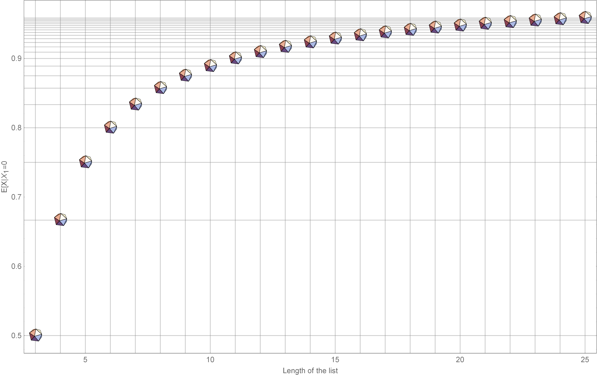

In the match problem of Example 2.31 involving \(n\), \(n > 1\), individuals, find the conditional expected number of matches given that the first person did not have a match.
As we see from the the problem’s description, 2.31 has been reiterated with a condition. This can be solved by applying the method of the conditional expectations \[E[X] = E[E[X|X=x]] ⇒ E[X] = E[X|X_1=0] P\{X_1=0\} + E[X|X_1=1] P\{X_1=1\}\]
Plugging these in the equality above, we get \(E[X|X_{1}=0] = \frac{n-2}{n-1}\)
The simulations have been summarized in the chart below. What is being shown in the chart?
Module[{iterations = {10, 20, 30, 50, 100, 200, 300, 500, 1000, 2000}},
DistributionChart[
Table[Module[{alphabet = Alphabet[], samples = #, data,
firstSelection, secondSelection},
data = Table[RandomSample[Alphabet[]], samples];
data = DeleteCases[data, {"a"}~Join~ConstantArray[_, 25]];
firstSelection = Length[data];
N@Mean[
Count[MapThread[#1 == #2 &, {Alphabet[], #}], True] & /@ data]
], 1000] & /@ iterations,
ChartElementFunction -> "PointDensity", GridLines -> {None, {0.96}},
ChartLabels -> iterations, ImageSize -> 788]]
Export[StringReplace[NotebookFileName[], ".nb" -> "_chart_01.png"], %, ImageResolution -> 500]
In the above example, we have looked at a system with a fixed number of units (hats). I have generalized the "Alphabet" algorithm from previous section to accommodate any list. I used the function to pass lists of increasing lengths and to see how the expected value changes, since, \(E[X|X_1 = 0]\) varies with \(n\) as \(\frac{n-2}{n-1}\). This particular simulation took ~30 minutes for completion.
Reading the chart: The chart has seven distributions shown and we can read it as follows. Each bar contains 1000 points and each point is a mean value generated from a 1000 selections of varying lengths. The length of the list can be seen from the label at the bottom of each of bar
mixAndMatchHats2[listIn_List] := Module[{samples = 1000},
DistributionChart[
Table[Module[{list = #, data, firstSelection, secondSelection},
data = Table[RandomSample[list], samples];
data =
DeleteCases[
data, {list[[1]]}~Join~ConstantArray[_, Length@list - 1]];
N@Mean[Count[MapThread[#1 == #2 &, {list, #}], True] & /@ data]
], 1000] & /@ listIn, ChartElementFunction -> "PointDensity",
ImageSize -> 788,
GridLines -> {None, ((# - 2)/(# - 1)) & /@ (Length /@ listIn)},
ChartLabels -> Length /@ listIn]]
mixAndMatchHats2[Table[Range[n], {n, {10, 20, 30, 50, 100, 200, 500}}]]
Export[StringReplace[NotebookFileName[], ".nb" -> "_chart_02.png"], %, ImageResolution -> 500]
Comparing with theory We know that \(E[X|X_{1}=0]\) varies with \(n\) as \(\frac{n-2}{n-1}\). We can plot this simply as a function to see the behavior of \(E[X|X_{1} = 0]\) with \(n\). The plot has been done for lengths of lists from 3 to 25.
End of the post ;)